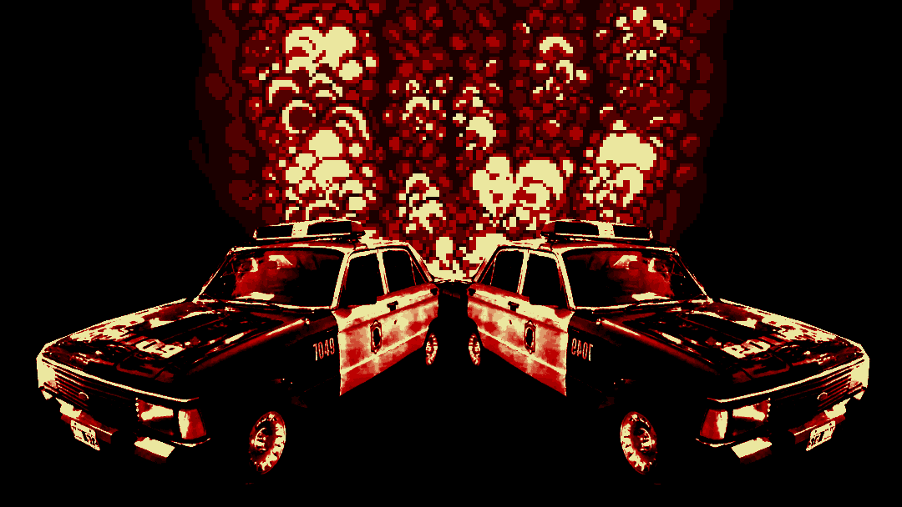
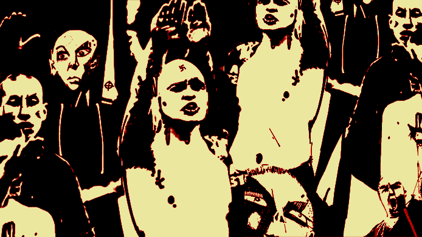

ELIJA UNA OPCIÓN
1. ¡HUIR! >
2. PELEAR >
3. ATRAVESARLOS >
![Notamos las similitudes entre los sueños y también nos percatamos de que nos desviamos. Entramos en una cortada lúgubre.A cien metros vemos dos patrulleros que arden. Debe ser obra del pirómano de Parque Chas. Los diarios y la radio lo bautizaron así, cuando comenzó a incendiar móviles policiales hace unos años. Se cree que fue chupado en dictadura o que enloqueció porque los milicos le desaparecieron la familia. Lo cierto es que jamás hubo que lamentar una víctima fatal en sus ataques, sólo fierros retorciéndose al calor de las llamas. Lo que realmente intimida de este escenario no es este infierno desatado en pleno micro centro, sino la banda de cabezas rapadas que viene hacia nosotros, agitando cadenas y cuchillos que traspasan la espesura del aire saturado de humo negro.](../media/012-3.gif)